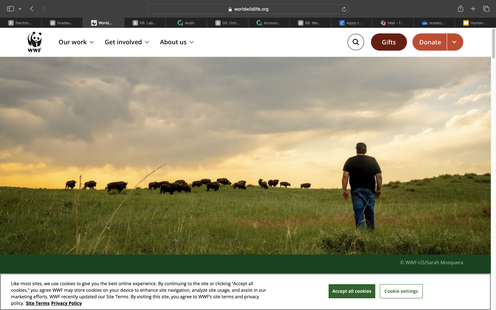

1. What is the URL of the website?
The website URL is https://www.worldwildlife.org .
2. What is the name of the website?
The website is called the World Wildlife Fund (WWF). It’s a global nonprofit organization focused on protecting nature and wildlife.
3. Who is the site's target audience?
The target audience is anyone who cares about the environment, including students, educators, scientists, activists, and supporters who want to learn more or get involved with wildlife conservation.
4. How is the site organized?
The WWF site uses a Hierarchical Organization. It has a clearly defined home page with links to major sections like “Our Work,” “Stories,” “About Us,” and “Get Involved.” This structure helps users find what they need quickly.
It follows the Three Click Rule really well. You can get from the homepage to any major topic in about three clicks or less. The navigation bar stays consistent across pages, making it easy to explore deeper sections without getting lost.
This kind of organization works great for a nonprofit website because it’s structured but still easy to browse without feeling overwhelming.
5. Which CRAP Design Principles does it use?
Contrast: WWF uses strong color contrast like white backgrounds with dark green or black text so the content is easy to read.
Repetition: Fonts, colors, and button styles are repeated across the whole site, which keeps everything consistent and professional.
Alignment: All sections are neatly aligned, and the images line up perfectly with the text, making it look clean.
Proximity: Related information (like donation buttons and gifts) are grouped together, so it feels organized and makes sense visually.
6. What is the Audit Score according to the Accessibility Checker?
According to the Accessibility Checker, the WWF website scores around 86/100. It meets most accessibility standards, using proper alt text, clear headings, and keyboard navigation. Only a few color contrast improvements could make it even better.
7. What is the site's effectiveness?
The site is very effective because it clearly communicates WWF’s mission to protect nature. It’s easy to find donation links, read success stories, or learn about different wildlife species. The homepage highlights their main causes, so visitors can take action without confusion.
8. What is the site's efficiency?
WWF’s website is efficient because it loads fast and the layout makes navigation simple. Important options like “Donate” or “Gifts” are visible on every page. The search bar and dropdown menus help users quickly get where they need to go.
9. How is the engagement?
The site is really engaging. It uses big, high-quality images of animals and nature that draw people in. The tone is positive and inspiring, which matches their message of protecting the planet and the animals that live on it. There are also stories, videos, and interactive options that make the experience more personal.
10. Recommendation for Improvement
One thing WWF could improve is making their donation process more noticeable. The website already looks great and has strong visuals, but the donation button could stand out more by using a brighter color or larger font. Since donations are a big part of their mission, highlighting that (CTA) call-to-action would make it easier for visitors to support their cause right away.
Screenshot of the Website
Screenshot of the WWF homepage.